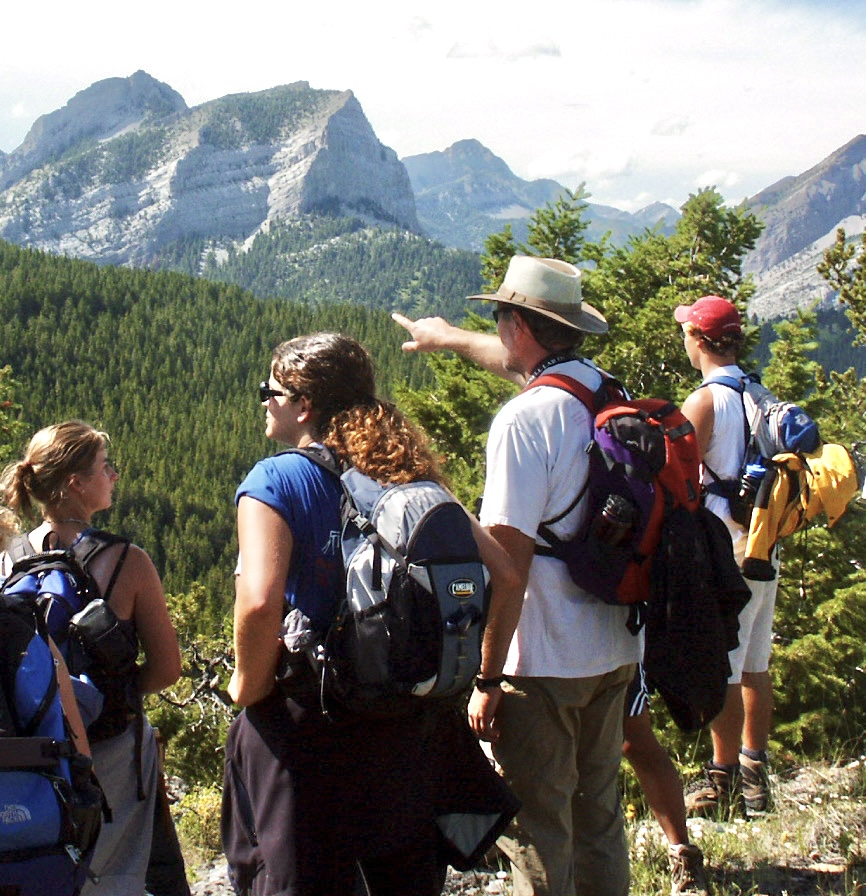

- ⚠️ Call for independent study students (Sierra Dome spider project).
- ⚠️ Spring 2026 course opportunity — scroll down for details and syllabus.
- ⚠️ Website update in progress — full site under construction.

Website Update in Progress
The official website for Dr. Paul J. Watson is transferring to a new home.
Please check back soon to see the updated site, including course information, publications, and research opportunities.
Independent Study Research Invitation – Summer 2026
I am seeking one or two independent study students for the summer of 2026 to work with me for 8 weeks or more at
Flathead Lake Biological Station. I have had many fine assistants over the years
helping me study the Sierra Dome Spider. But now, I am looking for individuals who, in addition to wanting a grad school prep research experience,
could seriously consider continuing the deep study of the Sierra Dome spider’s sexual selection system as a central part of their
life’s work, as I have done. In other words, at the age of 68, still healthy and loving the work, I am looking for a scientific heir.
There is massive opportunity available to the right person to continue studying this amazing model system long-term:
solidifying and expanding behavioral observations (including female-specific sperm utilization patterns),
adding new research elements needed to fully characterize the complexity of this mating system and to elucidate its evolution.
My emphasis now, since 2024, is documenting not just species-typical patterns of intra- and intersexual behaviors,
but also the diverse ways that individuals of both sexes develop to optimize both mind and body in an integrated way
for playing the mating game.
There is also potential for a wide range of not just relevant but essential molecular biological investigations — for example,
exploring how rickettsial diseases have affected the evolution of the mating system and individual development,
and how microbiomes and their interactions with genotypes and gene expression patterns influence individual developmental optimizations —
how everything from genes to microbes shapes the “personality development” of individual spiders in ecological time.
As part of this offer, I seek coauthors to assist me in publishing a considerable backlog of material —
ranging from copious raw data (e.g., on individual variation in courtship energetics) to almost completed manuscripts.
I would only claim secondary or last authorship.
It is exceedingly rare to find a complex sexual selection system so fantastically observable and manipulable
in both the field and the lab: Consider letting me show YOU the ropes and hand off this stunning model study system
to YOU, young investigator. Time is limited. I have limited but appreciable funds to help support you
as you join me in continuing this unusually long-term and in-depth research.

Lucky Sighting of a Double Sperm Web. Constructed in the dome of a female's web between copulatory courtship and insemination phase copulation in the Sierra Dome spider. Join me in continuing the study, and you too can be this lucky.
Sierra Dome spider (adult instar). Male left, female right.
Dr. Paul J. Watson is Associate Professor of Biology at the University of New Mexico
and a Faculty Affiliate of the Flathead Lake Biological Station in northwestern Montana,
where he has worked since 1980. Over decades, he has taught animal behavior courses and conducted
long-term research on the Sierra Dome spider’s sexual selection system, as well as many other shorter-term studies.
The extensive background dataset collected on the Sierra Dome, together with many other features of this spider species,
not least its exceptional observability and manipulability in field and lab, offers future investigators a uniquely powerful foundation
for asking truly cutting-edge questions of broad interest about the evolution of this species’ behavior.
Spring 2026 – BIOL 419/519: The Evolution of Religiosity and Human Coalitional Psychology
After a two-year pause, Dr. Watson is again able to offer his 3-credit BIOL 419/519 seminar,
The Evolution of Religiosity and Human Coalitional Psychology.
This unique evolutionary psychology course, now in its 17th edition, comprehensively investigates both the evolutionary origins
and potential adaptive significance of all cross-cultural (species-typical) aspects of religious experience, belief, and practice.
It is a science course that also encourages evolutionarily informed introspection and self-discovery.
The course is in no way an “articulate yet biologically vacuous” Dawkins- or Hitchens-style assault on religious belief or practice.
The course is strictly agnostic concerning the existence of “supernatural” entities or processes. It is a biology course that explores
how far we can get using modern Darwinian/Hamiltonian evolutionary theory and related empiricism to elucidate our strong, yet contingent,
religious and spiritual inclinations and drives.
In the past the course has been cross-listed as Psychology 450 and Religious Studies 447 for credits in those departments and programs.
Humanities majors interested in acquiring sober self-knowledge and a biological understanding of human nature are welcome to take this course.
Biological fundamentals key to thinking about social human behavior will be covered.
Regular attendance is vital; otherwise you will be lost.
Total enrollment will be limited to 22 students. Permission of instructor is required for enrollment.
Contact me at pwatson@unm.edu.
The course is fundamentally discussion-oriented. A respectful and safe environment will be maintained for sharing viewpoints,
relevant experiences, and for challenging course ideas. Yet, our discussions will always be rooted in critical, analytical,
theoretically informed thinking.
The latest version of the syllabus is available here:
Download Syllabus (PDF).

Pointing out things concerning our shared psychological landscape since ca. 1980.